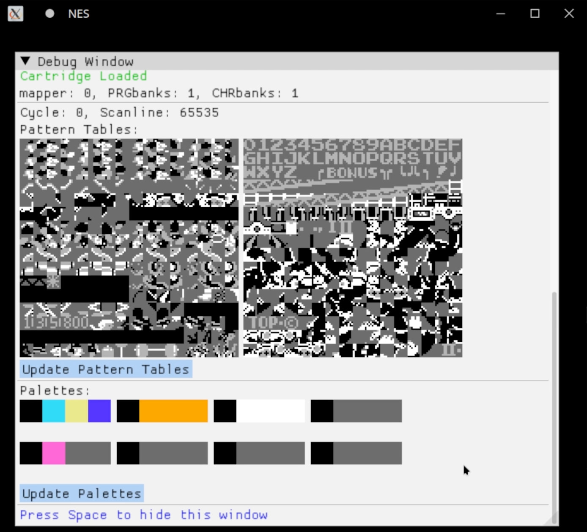
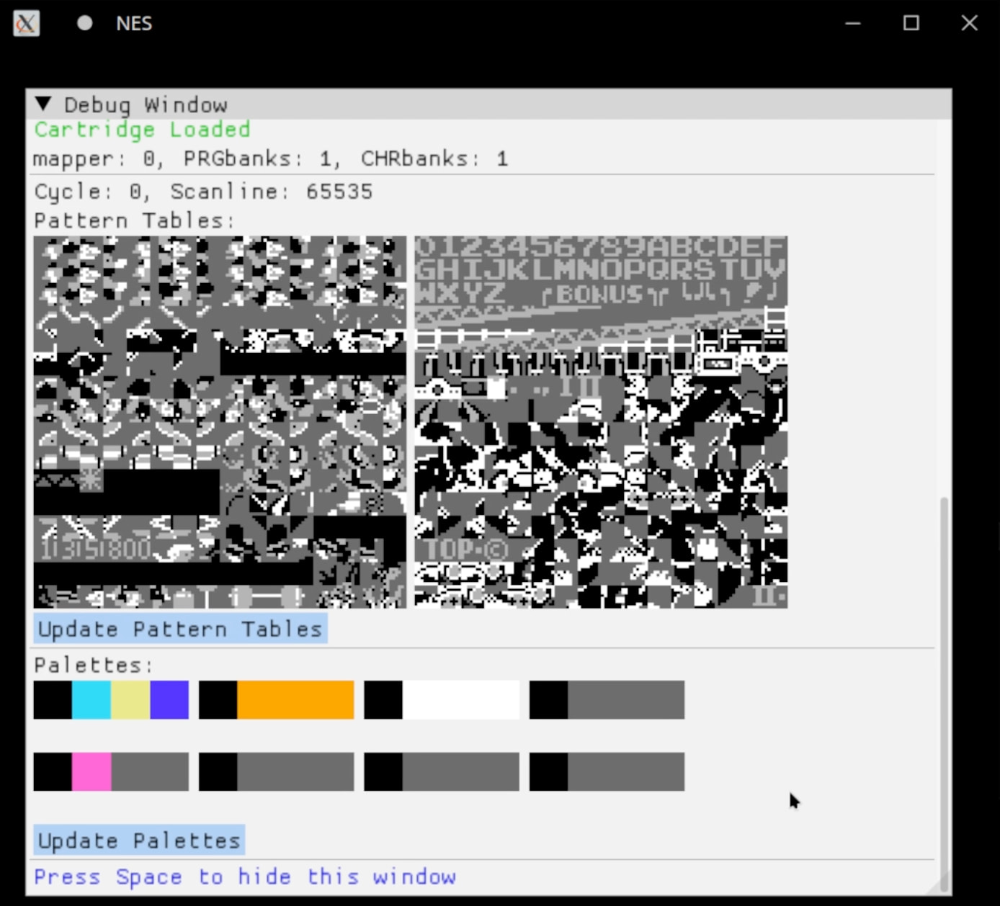

A NES emulator allows you to play NES games on other hardware. For example, your computer. iNESsential is my own implementation.
The current version supports mapper 0 NES ROMs, including scrolling, a debug menu, and a fully tested CPU
 

There were also some odd visual bugs during the development of the PPU. Mario and Ice Climbers respectively: